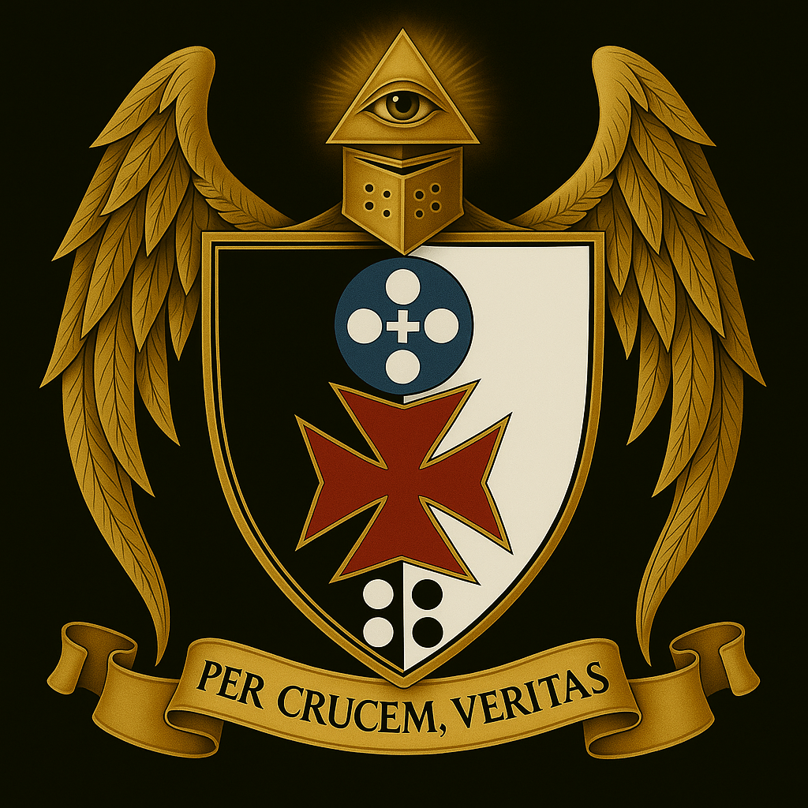

FRATERNITÉ TEMPLIÈRE
Ordre Sacré des Neuf Templiers de Jérusalem
Traité de fraternité et de coopération
Entre
l'Ordre Secret du Temple (OST)
et
l'Ordre Sacré des Neuf Templiers de Jérusalem
(OSD9TDJ)
Ce traité établit des relations de fraternité, de respect mutuel et de coopération entre les deux ordres, dans le respect de leur indépendance, de leurs traditions et de leur identité propre.
Le document PDF signé constitue le texte de référence du traité.
✠ L'Ordre Secret du Temple (OST) ✠
L'Ordre Secret du Temple est l'organisation signataire du présent traité de fraternité avec l'Ordre Sacré des Neuf Templiers de Jérusalem. Cet engagement repose sur une volonté commune de respect, de dialogue et de coopération fraternelle.
Documentation complémentaire sur le traité
Présentation documentaire du traité OST–OSD9TDJ
Le contrat de fraternité templière n° 1 présenté sur cette page correspond au traité de fraternité et de coopération conclu entre l'Ordre Secret du Temple, désigné par le sigle OST, et l'Ordre Sacré des Neuf Templiers de Jérusalem, désigné par le sigle OSD9TDJ.
Il s'agit d'un accord de coopération fraternelle entre deux organisations distinctes. Son objet est d'établir un cadre de relations mutuelles, d'encourager le dialogue, de faciliter certains échanges et de définir les principes généraux d'une collaboration respectueuse de l'autonomie de chacune des parties.
Le traité constitue un document contractuel entre ses signataires. Sa portée doit être appréciée à partir de ses dispositions écrites et non à partir d'une interprétation extérieure ou d'une revendication de reconnaissance institutionnelle qui ne figurerait pas dans le document.
Nature de la fraternité templière
La notion de fraternité templière désigne ici une relation volontaire de considération réciproque entre deux organisations se référant, chacune selon son identité et ses usages, à la tradition templière et chevaleresque.
La fraternité peut s'exprimer par des échanges, des rencontres, des manifestations communes, des travaux historiques, des initiatives culturelles, des activités patrimoniales et des formes d'assistance librement consenties.
Elle n'implique pas nécessairement une identité complète de doctrine, de fonctionnement, de cérémonial ou de conception spirituelle. Le respect de la diversité des pratiques constitue précisément l'un des principes permettant à des organisations autonomes de maintenir une relation fraternelle.
Présentation des parties signataires
L'Ordre Secret du Temple – OST
L'Ordre Secret du Temple est l'une des deux organisations désignées comme parties au traité. Dans ce cadre, l'OST participe à un engagement de fraternité et de coopération avec l'OSD9TDJ.
Le traité prévoit que chaque organisation conserve ses structures propres, ses usages, ses traditions, ses grades, ses emblèmes et son gouvernement interne.
L'Ordre Sacré des Neuf Templiers de Jérusalem
L'Ordre Sacré des Neuf Templiers de Jérusalem, ou OSD9TDJ, est une association française qui développe une démarche d'inspiration templière dans un cadre associatif autonome.
Son identité se réfère notamment à la mémoire historique des premiers Templiers, aux valeurs de fraternité, de loyauté, de responsabilité, de service, de transmission et de recherche culturelle.
Dans le traité présenté, l'OSD9TDJ intervient comme partie signataire et partenaire d'une coopération définie par les dispositions du document signé.
Structure générale du traité
Le document comporte un préambule, huit articles et une déclaration finale. Les articles abordent successivement la reconnaissance mutuelle, la fraternité templière, la coopération spirituelle et culturelle, l'assistance mutuelle, le respect des traditions, la représentation réciproque, la durée du traité et la déclaration solennelle des parties.
Article premier – Reconnaissance mutuelle
Le premier article traite de la reconnaissance réciproque entre les organisations signataires. Il affirme leur autonomie et leur indépendance dans l'exercice de leurs structures, de leurs traditions et de leur gouvernement.
Cette reconnaissance est mutuelle et limitée aux parties qui l'expriment. Elle ne constitue pas, à elle seule, une reconnaissance par une autorité religieuse, historique ou administrative extérieure.
Article II – Fraternité templière
Le deuxième article porte sur le maintien de relations fraternelles entre les deux ordres. Il vise notamment l'entraide, le respect, la bienveillance et l'accueil des membres lors de certaines activités ou manifestations, selon les conditions fixées par l'organisation qui les accueille.
La fraternité ainsi définie repose sur le consentement des parties et le respect des règles propres à chaque institution.
Article III – Coopération spirituelle et culturelle
Le troisième article envisage des échanges dans les domaines spirituel, culturel et historique. Il peut notamment concerner des recherches sur la chevalerie, l'histoire du Temple, les traditions templières et la transmission patrimoniale.
Des rencontres, conférences, colloques, commémorations ou autres manifestations peuvent être envisagés lorsque les deux organisations décident de les organiser ou d'y participer.
Article IV – Assistance mutuelle
Le quatrième article prévoit la possibilité d'une assistance fraternelle entre les parties. Cette assistance dépend des circonstances, des moyens disponibles et du consentement de chaque organisation.
Le traité ne crée pas, par cette disposition, une obligation financière ou administrative permanente entre les deux institutions.
Article V – Respect des traditions
Le cinquième article concerne le respect des rites, des usages, des coutumes, des grades, des emblèmes, des insignes et des structures propres à chaque ordre.
Il rappelle également qu'un membre ne peut prétendre représenter l'autre organisation sans disposer du mandat ou de l'autorisation nécessaire.
Article VI – Représentation réciproque
Le sixième article envisage la désignation de représentants chargés de maintenir les relations fraternelles.
Selon les dispositions du traité, des grands officiers ou des ambassadeurs peuvent être désignés afin de faciliter le dialogue, les échanges et le suivi des engagements réciproques.
Article VII – Durée du traité
Le septième article concerne la durée de l'engagement. Le traité est conclu pour une durée illimitée à compter de sa signature.
Chaque partie conserve la possibilité de s'en retirer par notification écrite adressée à l'autre partie, avec un préavis de trois mois, selon les conditions définies par le document.
Article VIII – Déclaration solennelle
Le huitième article exprime les principes solennellement affirmés par les signataires. Il évoque notamment la fidélité à l'idéal templier, la recherche de la paix entre les ordres, la coopération fraternelle, le service et la transmission des valeurs chevaleresques.
Portée institutionnelle de l'accord
Le traité établit une relation entre l'Ordre Secret du Temple et l'Ordre Sacré des Neuf Templiers de Jérusalem.
Il ne fusionne pas les deux organisations et ne transfère pas automatiquement les pouvoirs, les fonctions, les grades ou les responsabilités de l'une à l'autre.
Chaque ordre demeure responsable de son organisation, de ses décisions, de ses membres et de ses activités.
La reconnaissance réciproque prévue par le traité ne doit pas être interprétée comme une reconnaissance par le Saint-Siège, par une Église particulière ou par une autre autorité extérieure aux signataires.
Importance du document original signé
La version PDF accessible sur cette page constitue la source documentaire principale. Elle permet de consulter directement le préambule, les huit articles, la déclaration finale et les éléments de signature reproduits dans le document.
Les présentes explications sont fournies uniquement pour faciliter la compréhension générale du traité et son référencement documentaire. Elles ne modifient pas le contenu du document signé.
En cas de divergence entre une présentation synthétique et le texte du traité, il convient de se reporter au document original disponible au format PDF.
Publication de l'Ordre Secret du Temple
L'Ordre Secret du Temple a également communiqué publiquement au sujet de cette fraternité sur Facebook.
Cette communication constitue une publication complémentaire à la mise à disposition du contrat signé sur le site de l'OSD9TDJ.
Le document contractuel et la publication de l'OST permettent ainsi de retrouver les principales références publiques relatives à cet engagement fraternel.
Repères documentaires
Titre du document : Traité de fraternité et de coopération entre l'Ordre Secret du Temple et l'Ordre Sacré des Neuf Templiers de Jérusalem.
Parties signataires : Ordre Secret du Temple (OST) et Ordre Sacré des Neuf Templiers de Jérusalem (OSD9TDJ).
Nature du document : accord de fraternité et de coopération entre deux organisations distinctes et autonomes.
Structure : préambule, huit articles et déclaration finale.
Format de consultation : document PDF reproduisant le traité signé.
Objet principal : reconnaissance mutuelle, fraternité, coopération, assistance, respect des traditions, représentation et engagements réciproques.
Questions documentaires
Qui sont les signataires du traité ?
Les deux organisations désignées sont l'Ordre Secret du Temple et l'Ordre Sacré des Neuf Templiers de Jérusalem.
Le traité prévoit-il une fusion ?
Non. Le document établit une coopération entre deux organisations qui conservent leur autonomie.
Où se trouve le document signé ?
Le document signé est accessible sur cette page par le lien « Lire le contrat de fraternité templière ».
Quelle est la durée du traité ?
Le traité est conclu pour une durée illimitée, avec une possibilité de retrait selon les modalités définies dans son article VII.
Le traité impose-t-il une contribution financière ?
L'assistance prévue est volontaire. Le traité ne crée pas d'obligation financière permanente entre les parties.
Le traité est-il une reconnaissance officielle par une autorité religieuse ?
Non. La reconnaissance mutuelle concerne les deux signataires. Elle ne vaut pas reconnaissance institutionnelle par une autorité religieuse extérieure.
Références et consultation
Le contrat de fraternité templière est consultable directement dans le document PDF signé.
La publication de l'Ordre Secret du Temple est accessible par le lien présenté dans la section consacrée à l'OST.
Pour toute interprétation précise des droits et engagements des parties, le texte du traité demeure la référence documentaire.